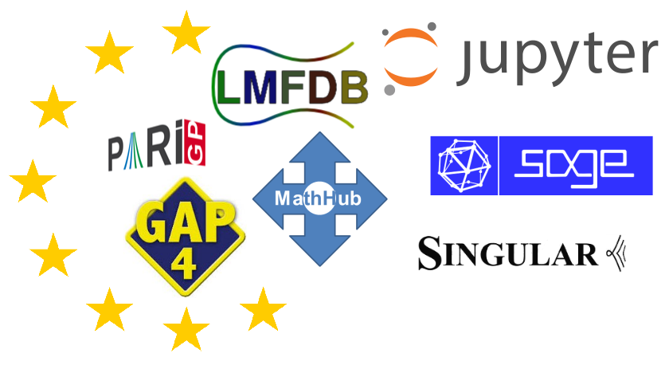

A brief overview of Jupyter and its ecosystem¶
\(\newcommand{\K}{\mathbb{K}}\) 
Nicolas M. Thiéry
LRI, Université Paris-Sud / Saclay
Note
Welcome everyone to this session about the Jupyter Environment for Computational Mathematics!*
Since it appeared in 2014, Jupyter was widely adopted for interactive computations. There was a very fruitful collaboration between the computational mathematics and the Jupyter communities. I’ll thank here the European Union for providing massive funding through the OpenDreamKit project. It was an awful lot of work to coordinate this project; but it helped a lot bringing people together and getting help from Research Software Engineers.
I launched this session as an occasion for sharing our expertise and views on Jupyter, and report about all the good things and the bad things when putting it in practice. I hope you’ll enjoy this session despite the circumstances, and am looking forward enlightening discussions!
What’s Jupyter?¶
From jupyter.org: Project Jupyter exists to develop open-source software, open-standards, and services for interactive computing across dozens of programming languages.
Note
This does not sound very concrete yet, right? Let’s start with Jupyter’s flagship application:
The Jupyter Notebook¶
Again from jupyter.org: an open-source web application that allows you to create and share documents that contain live code, equations, visualizations and narrative text
Some use cases¶
Teaching material: some interactive class notes in graph theory
Interactive slides: this is a Jupyter notebook!
Computer exploration log books
Data analysis reports
…
a good tool for sharing reproducible interactive stories
a rich user interface for computational systems
Later in this session¶
Olivier: Interactive visualization of 2d zeta functions
Pedro: Discrete maths visualization with GAP
Miguel: Teaching mathematics with Jupyter
Note
You’ll often hear complains that Jupyter notebooks tend to be messy and hard to navigate. That’s right! Owning a typewriter does not make you Hemingway. Jupyter is no different. It does take training to write good stories. Also newcomers tend to abuse their new shiny hammer and use Jupyter as code editor, which it’s not meant for.
Caveats¶
It takes skills and practice to write good stories; Jupyter is no different
Not meant as a ~~code editor~~
What’s new, really, with Jupyter?¶
Early 90’s: Maple, Mathematica, MuPAD, …¶
Note
In 1994, when I started my thesis, notebooks were already common. With the same use cases and abuse and complaints. I personally was using Maple, but Mathematica and many other systems had notebooks.
Early 2000’: TeXmacs, LyX¶
~2006: SageMath¶
Note
In 2006, the SageMath notebook brought some innovations with a web-based architecture, enabling online use and sharing.
~2008: IPython¶
Note
Then, the IPython team took the lead from there with a carefully crafted architecture and implementation. And then they realized, as the TeXmacs developers had done earlier, that most of the architecture was system independent. By defining a standardized communication protocol one could integrate any computational system that provided a kernel implementing that protocol. That was the birth of Jupyter, starting with three kernels for Julia, Python and R.
2014-: Jupyter¶
web-based, system-independent notebook application
standardized formats and communication protocols
kernels for Julia, Python, R, and now dozens of others; even C++ or Coq!
2019: Jupyter Lab¶
Refactoring as a highly modular library
The notebook: just one of many applications built on top of this library
Work spaces, code editor, …
Adoption¶
In academy and industry, notably for data science
Millions of Jupyter notebooks on GitHub
Every cloud provider offers some Jupyter service:
Google Collaboratory, Azure notebooks, …Alternative implementations exploring additional features:
e.g. live collaboration in CoCalc
Note
Now we see why jupyter focuses on open source, protocols, standards, modularity rather than on a specific applications. This paves the way for a whole community-developed ecosystem to flourish.
A whole ecosystem of community contributed tools and extensions
Adoption in mathematics?¶
kernels for GAP, Oscar (Julia), Pari/GP, SageMath, Singular
and all C++, Julia, Python, … math libraries!
On Thursday:
Marek: new PolyMake interface through Julia
Jan: a new kernel for prototyping mathematical languages
Sebastian: approaches for implementing new kernels
Some gems in the Jupyter ecosystem¶
Authoring¶
Jupyter Widgets: rich interactivity and applications
See Odile’s presentationRISE: interactive slides
JupyterBook: interactive online books from a collection of notebooks
ThebeLab: embedding live examples in static web pages
nbconvert: convert to all sorts of formats
JupyText: when you like plain text files
nbdime: version control integration
nbval: regression testing
Teaching¶
nbgrader: a tool for creating and grading assignments
Cocalc: Collaborative Calculation, with class management support
Access¶
JupyterHub: online Jupyter service, e.g. at the scale of an institution
Sharing¶
Forges (GitHub, GitLab) with notebook integration
SoftwareHeritage: long term archival
nbviewer: online preview
Binder: service to run notebooks online with arbitrary dependencies
Take home message / personal view on Jupyter¶
Note
To conclude, let me try to summarize, in my view, what are the main Pros and Cons of Jupyter.
Pros:
Rich user interfaces for interactive computing
A vivid fast moving ecosystem
Adopted by millions in all areas of computational sciences
Adopted by many popular mathematical systems
Versatility and smooth learning curve
Note
First comes the wide adoption in all areas of computational sciences, including Mathematics. With as corollary, a fast moving ecosystem of tools. Then comes the versatility. At first, you just read and play with existing notebooks; or use them as advanced pocket calculator. And then you move on to authoring and sharing your own stories. As you gain confidence, you make your stories more interactive with widgets. Taylor the tool to your needs. Design mini-applications. And share everything with your less advanced colleagues. This smooth learning curve lower the barrier between users and developers. And also between systems.
Note
Now, certainly not everything is perfect. Did I mention the fast moving ecosystem?
Cons:
A fast moving ecosystem
More advanced contributions require more advanced skills (e.g web technologies)
Note
Well, this can be tough to newcomers who can easily get lost; especially when everyone around uses his own favorite combination of tools from the ecosystem. In addition there is some complexity built into the architecture with Javascript on the browser side talking with Python on the server side. More advanced contributions, like integrating some cool Javascript library, require familiarity with web technologies which is a whole new world for most computational mathematicians, like me.
Note
This concludes my little overview of the Jupyter ecosystem. Thanks for listening. I hope you’ll enjoy the session and am looking forward further discussions!